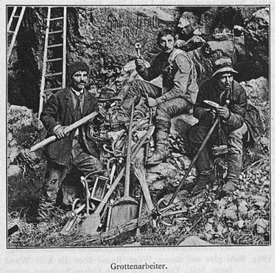

- Naslovna stran
- Namen in cilji
- Program
- Organizacijski odbor
- Tehnične informacije
- Lokacija dogodka
- Možnosti nastanitve
- Možnosti prehrane
- Splošne informacije
- Prijava udeleženca
- Arhiv preteklih šol

Organizatorji
Mednarodna krasoslovna šola “Klasični kras”: Inštitut za raziskovanje krasa ZRC SAZU
Titov trg 2, SI-6230 Postojna, Slovenija
T: 05 700 1900
F: 05 700 1999
E: iks@zrc-sazu.si
Web: http://iks.zrc-sazu.si
50. obletnica UISa:
Mednarodna speleološka zveza – UIS & Inštitut za raziskovanje krasa ZRC SAZU
Titov trg 2; SI-6230 Postojna, Slovenija
So-organizator 50. obletnice UISa:
Postojnska jama d.d.
Jamska cesta 30, 6230 Postojna, Slovenija
Web: http://www.postojnska-jama.eu/
23. mednarodno krasoslovno šolo “Klasični kras” podpirajo:
- Slovenska Nacionalna komisija za UNESCO
- Znanstvenoraziskovalni center SAZU
- Slovenska akademija znanosti in umetnosti
- Občina Postojna
- Park Škocjanske jame
- Grotta Gigante
- Jamarska zveza Slovenije
Kontaktna oseba:
Nadja Zupan Hajna
E: iks@zrc-sazu.si

Organizacijski odbor
Nadja Zupan Hajna, Andrej Mihevc, Franci Gabrovšek, Petra Gostinčar, Zdeněk Motyčka, Matej Blatnik, Martin Knez, Peter Kozel, Janez Mulec, Bojan Otoničar, Metka Petrič, Tanja Pipan, Mitja Prelovšek, Tadej Slabe, Stanka Šebela, Nataša Viršek Ravbar
Programski odbor
Nadja Zupan Hajna, Andrej Mihevc, Andrej Kranjc, Franci Gabrovšek, Pavel Bosák